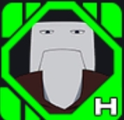
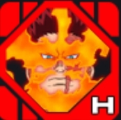
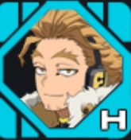
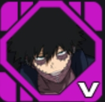
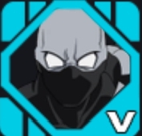
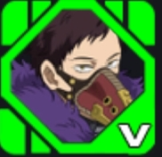
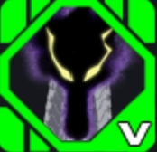

Izuku Midoriya (Deku)

Herdeiro do One For All e protagonista da série. Deku é um personagem equilibrado, capaz de atacar à distância e causar grandes danos com seus golpes.
Herdeiro do One For All e protagonista da série. Deku é um personagem equilibrado, capaz de atacar à distância e causar grandes danos com seus golpes.

Utiliza explosões poderosas para atacar e se movimentar rapidamente pelo mapa. Seu estilo agressivo o torna um dos personagens mais perigosos do jogo.

Controla fogo e gelo para causar dano e controlar áreas. É um dos personagens mais completos para qualquer situação.

Manipula a gravidade para ajudar aliados e dificultar a movimentação dos inimigos. Excelente em suporte e mobilidade.

Conhecido por sua incrível velocidade. Consegue perseguir adversários e ajudar a equipe rapidamente.

Heroína versátil inspirada em sapos. Possui ótima mobilidade e capacidade de sobrevivência.
Utiliza o endurecimento para resistir a ataques e proteger seus companheiros durante as batalhas.

Manipula eletricidade para causar dano em área e interromper ações dos inimigos.

Cria equipamentos e itens úteis para auxiliar sua equipe. É uma personagem focada em estratégia.

O Símbolo da Paz. Possui força extraordinária, grande resistência e ataques extremamente poderosos.

Cria estruturas de cimento para bloquear caminhos, proteger aliados e controlar o campo de batalha.

Capaz de aumentar seu tamanho e esmagar adversários com ataques de grande alcance.

Utiliza suas mãos gigantes para atacar, defender aliados e controlar confrontos.

Controla vinhas para prender inimigos e atacar à distância, oferecendo ótimo suporte.

Consegue atravessar objetos usando sua individualidade, tornando-se extremamente difícil de atingir.

Ataca utilizando poderosas ondas de energia que causam dano contínuo aos adversários.

Possui habilidades versáteis que permitem se adaptar a diferentes situações durante a partida.

Pode apagar temporariamente as individualidades dos inimigos, tornando-se uma ameaça estratégica.

Utiliza chamas intensas para causar grandes quantidades de dano em média e longa distância.

Herói extremamente veloz que utiliza penas para atacar e se movimentar rapidamente pelo mapa.

Ataca usando ondas sonoras poderosas capazes de atingir vários inimigos ao mesmo tempo.

Vilão que desintegra tudo o que toca, espalhando destruição por onde passa.

Utiliza chamas azuis extremamente destrutivas para atacar inimigos à distância.

Ágil e imprevisível, utiliza facas e movimentos rápidos para surpreender seus adversários.

Cria clones de si mesmo para confundir inimigos e aumentar a pressão durante os combates.

Especialista em truques e estratégias, oferece suporte à equipe enquanto ataca à distância.

Um dos vilões mais poderosos da obra, capaz de causar destruição massiva com suas habilidades.

Manipula a matéria para atacar e defender, tornando-se extremamente versátil em combate.

Cria portais para transportar aliados e atrapalhar os movimentos dos inimigos.